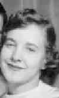

 Margaret M. MORROW (1932-2019) |
Margaret M. MORROW
Margaret married Donald YALENTY, son of Filippo IALENTI Sr. and Margaret STRAZZA, in 1952.1 (Donald YALENTY was born on 29 Apr 1932 in Penn Township, Allegheny, PA 1 and died on 16 Jul 2007 in Plum, Allegheny, PA 3.) |
1 Peggy Morrow Yalenty, Letter to Thomas Hoey (Pittsburgh, PA, 1997).
2 Pittsburgh Tribune-Review, Margaret Morrow Yalenty Obituary (Pittsburgh, PA, 25 Aug 2019).
3 Pittsburgh Post Gazette, Donald Yalenty Obituary (Pittsburgh, PA, 20 Jul 2007).